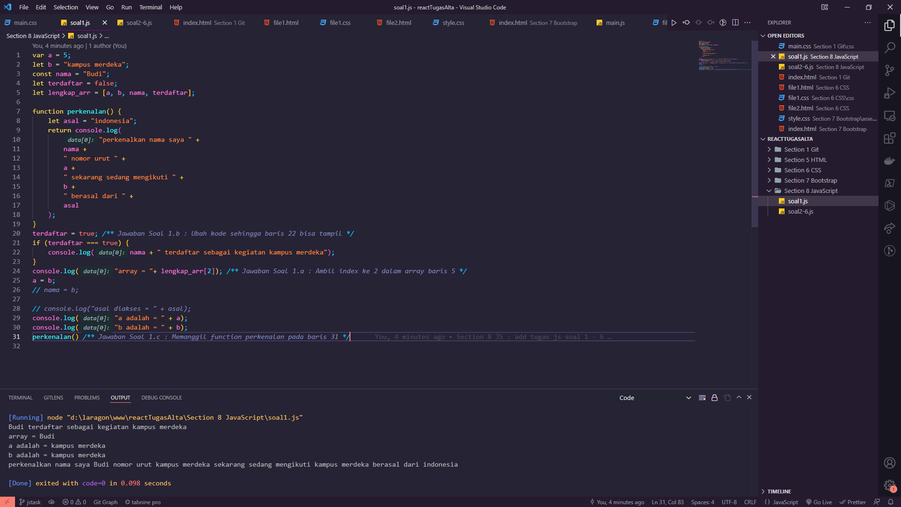

Week 1 Task
Deny Firdhaus Hadi Prayitno
(ReactJS Class A)
My Task Tabs
Version Control and Branch Management
1. Introduction to Git and Github
Versioning : melakukan sebuah pengaturan versi atau pelacakan perubahan
dari setiap code program. Untuk apa melakukan versioning? digunakan
untuk mentracking terkait permasalahan baik itu pengubahan objek kode
atau seseorang yang melakukan perubahan. Sehingga penting saat ini untuk
menggunakan VCS (Versioning Control System) seperti Github. Tools yang
bisa dipakai VCS, SCM, dan RCS.
# Version Control System (VCS)
1. Single User : bentuk versioning masih localized
2. Centralized : ada sistem terpusat bagi banyak developer bisa
melakukan pengubahan file di server secara langsung.
3. Distributed : merupakan gabungan, terdapat file local yang
tersinkronisasi dengan file yang ada di server / central / pusat data.
# More About Git and Github
- GIT : salah satu contoh VCS Distributed yang digunakan developer untuk
mengembangkan software secara bersama-sama / kolaborasi.
- Git Repository : sebuah folder project di github untuk menyimpan local
files yang telah di upload ke server. Didalamnya terdapat 2 hal folder
dan file kode serta folder .git yang sifatnya terhidden yang berisikan
mengenai Riwayat commit dan perubahan yang dilakukan pada kode.
- Github = git hosting service, yang dianggap sebagai sosmed developer
dan menjadi sebuah tempat untuk menampung proyek git serta mempermudah
dalam meng-hosting di server tanpa susah payah harus men-setup /
konfigurasi server git.
2. Learning Git Commands and starting in Github
# Membuat repository di github :
- Membuat akun di github sampai verifikasi
- Menuju ke ”your repositories”
- Membuat repo baru
- Mengisi nama repo
- Memberikan deskripsi
- Memilih jenis repo (public / private)
- Tambahkan readme file sebagai dokumentasi penting
# More about Github utils
- .gitignore : digunakan untuk mengecualikan file besar, contoh pada
proyek node-js akan ada folder node_modules yang sangat besar dan sangat
tidak disarankan untuk diupload ke server, dan file seperti .env yang
tidak perlu diupload ke server.
- Licences : menentukan sifat proyek yang dibuka sesuai dengan skala
kebutuhan proyek baik itu nanti bisa dibisniskan atau hanya bisa dilihat
dan didownload saja.
# Staging area
dalam local git terdapat 3 hal yakni working directory, staging area,
dan repository.
- Working directory : file / folder yang ada di local akan masuk ke
staging area
- Staging Area : tempat penandaan file yang mengalami perubahan sebelum
melakukan commit, membutuhkan pesan mengenai perubahan yang dibuat
- Repository : commit akan perubahan tadi sudah siap dikirim ke repo
# More about git commands
- Git Status : mengeluarkan keadaan git dimulai dari keterangan branch
dan file commit dan perubahan di working directory.
- Git Diff : mengetahui perubahan apa saja yang terjadi dalam file.
- Git Stash : sebuah penyimpanan sementara bagi perubahan yang telah
digunakan dalam sebuah stash area.
- Git log : melihat Riwayat commit pada repo.
- Git reset {commit id} --soft : ketika mau kembali ke suatu titik,
perubahan yang sudah terjadi akan tetap ter tracking di staging area.
- Git reset {commit id} –hard : perubahan yang sudah terjadi tidak akan
ter tracking
- Git push : perintah mengirimkan commit ke server / repo
- Git fetch {nama jalan / origin}: semacam mengambil data yang ada
didalam server / repo
- Git pull {nama jalan / origin} {branch} : merupakan command yang
menjalankan dua perintah yakni fetch dan push sekaligus secara
berurutan.
- Melakukan cek branch pada working directory dengan ‘git branch’.
- Menambah branch dengan command ‘git branch {nama branch}’
- Menghapus branch dengan command ‘git branch -D {nama branch}’
- Melihat seluruh branch yang ada di remote server dan di local dengan
‘git branch -a’
- Git checkout : berpindah dan membuat branch baru dengan membawa
perubahan yang sudah ada pada branch awal.
- Git merge : Mengambil perubahan dari branch lain.
- Memindah fast-forward / memindah jadi 1 line artinya perubahan yang
terjadi sama dengan ‘git merge –ff {nama branch}’
- Memindah non fast-forward / memindah menjadi line yang berdeda artinya
tetap menjadi cabang yang berbeda dengan ‘git merge –no-ff {nama
branch}’
- Pull request : meminta agar branch untuk di pull ke branch utama /
development karena fitur sudah selesai, dilakukan melalui github
3. Workflow Collaboration
Kolaborasi yang dilakukan pada github hendaknya memiliki bagian tersendiri yang jelas sehingga dalam mengerjakan dapat fokus dalam 1 hal dan mudah untuk di manage ketika melakukan kesalahan.
ScreenShot Tugas:
Introduction UI/UX
1. UX (User Experience)
Apapun yang pengguna rasakan ketika mereka menggunakan produk. UX
terdiri dari bidang kelompok yang besar diantaranya ada:
- Business Logic
- Technology
- Interaction Logic
- Design
- Computer Communication
- Business
# Tahapan UX Thinking
1. Empathize : berpura-pura / berimajinasi untuk melihat dunia dari
sudut pandang user dan memahami perasaan para user sehingga komunikasi
yang dibuat antara user dan pengelola software dapat terhubung /
nyambung. Perlu membuat User Persona yang merupakan profile dari target
user, prinsip mendasar dalam membuat suatu user persona adalah apasih
desain yang kita buat dan untuk siapa desain / UX ini kita buat.
Dari user persona ini akan terbuat sebuah karakteristik yang nantinya
bisa dibuat menjadi user job stories yang meliput 3 hal yakni situasi
(situation), motivasi (motivation), dan hasil yang diinginkan (outcome).
Type of an actual user profile according to their expectations, needs,
goals, and observed behaviour patterns -> User Persona
Usability Testing : salah satu cara untuk mengetahui apakah user dapat
dengan mudah menggunakan software / program yang telah dibuat. Seberapa
efisien dan efektif sebuah aplikasi dapat membantu user untuk mencapai
tujuannya, serta bagaimana kepuasan user ketika menggunakan aplikasi
tersebut. Usability testing dapat digunakan untuk produk / software yang
baru dibuat dengan melakukan pengambilan data secara kualitatif
melakukan interview kepada para user yang menggunakan produk kita. Pada
produk / software yang sudah ada (existing product), kita dapat
melakukan usability testing dengan pengambilan data secara kuantitatif
dengan melakukan penyebaran angket kepada para user yang telah
menggunakan produk tersebut.
2. Define : pada tahap ini, kita menggunakan setiap informasi yang telah
ciptakan atau kumpulkan pada tahap sebelumnya sehingga dapat
memprioritaskan informasi yang ada. Harapan pada tahap ini kita dapat
menentukan / mendefinisikan masalah inti dari user sehingga dapat
memfokuskan apa yang perlu dikembangan dalam UX suatu produk.
3. Ideate : User goal dapat berisikan dari user flow dari setiap langkah
apa saja flow yang diperlukan bagi setiap user ketika menggunakan produk
yang dibuat sehingga dapat terlihat hasil akhir atau goals yang bisa
dicapai oleh user pada produk kita. Bisa dimulai dengan membuat task
flow nya yang berisikan tahapan / langkah-langkah yang user lakukan
sampai user menyelesaikan setiap langkahnya. Ketika task flow sudah
selesai, maka kita bisa beralih untuk membuat wireflow yakni kombinasi
antara wireframe dan flowchart. Wireframe merupakan sebuah kerangka
untuk menata suatu item dalam produk, flowchart atau bagan alur adalah
diagram yang menampilkan langkah-langkah dan keputusan untuk melakukan
suatu proses dari suatu program.
4. Prototype
5. Validate
2. User Interface (UI)
Ketika sudah selesai tahapan wireflow maka kita bisa beralih ke user
interface dari produk. User interface adalah visual yang user gunakan
untuk berinteraksi pada aplikasi yang dibuat. UI memiliki 4 pilar
didasari tentang bagaimana penampilan dan pemahaman dari desain agar
bisa saling klop / bekerja sama (worked together).
- Consistency : menggunakan desain yang memiliki pola yang sama untuk
setiap halamannya serta alur penggunaan yang mirip untuk setiap
halamannya.
- Keep the interface simple : perlu untuk menghilangkan elemen-elemen
yang mungkin tidak diperlukan dalam sebuah halaman. Serta menggunakan
bahasa yang jelas dalam setiap button / interaksi yang ada dapat membuat
user lebih mudah dalam berinteraksi dalam aplikasi.
- Good Typography : penggunaan typeface yang tepat sesuai dengan kondisi
halaman. Perlu diperhatikan juga seperti penggunaan ukuran, jenis font,
dan tata letak pengaturan dalam menggunakan text sehingga dapat mudah
untuk dibaca.
- Offer Informative Feedback : umpan balik dari suatu aksi yang
diberikan kepada user haruslah berarti, relevan dan jelas. Bisa
ditambahkan deskripsi sebagai penjelas bagi user.
3. Protoype
Merupakan sebuah simulasi atau contoh sampel yang menggambarkan final
product. Tujuannya adalah digunakan untuk melakukan test product sebelum
menghabiskan banyak waktu dan uang dalam projek yang dibuat. Selain itu
tujuan dari prototype adalah mendapatkan feedback dari user,
stakeholder, dan tim sehingga dapat memberikan masukan terkait produk
yang akan dibuat. Kedua, juga bisa bertujuan untuk menunjukkan bentuk
interaksi yang terjadi di projek nanti sehingga mempermudah developer
untuk membuat program / aplikasi / software nantinya. Terdapat 3 pilar
dalam prototype :
- Representation : Shows the platform used (mobile / desktop)
- Precision : The fidelity of the prototype, ketepatan suatu prototype
- Interactivity : Shows the functionality (interaction) to user
Tools prototyping : Axure RP, Adobe XD, invision, marvel, sketch,
balsamiq, flinto, figma
ScreenShot Tugas:

Figma
1. Intro Figma
Figma merupakan editor graphic vector dan alat prototyping yang berbasis
web dengan fitur offline yang digunakan untuk aplikasi desktop baik itu
untuk macOS atau windows.
# Kelebihan Figma :
- Aplikasi yang free
- Bisa digunakan Mac dan PC
- Real-time team collaboration
- Bisa import Sketch file tapi gabisa export Sketch file
- Mengintegrasikan developer yang bekerja terpisah
- Memiliki library yang bagus
- Dapat melakukan integrasi prototyping
# Kekurangan Figma :
- Memerlukan jaringan internet untuk mengoperasikannya
- Namun bisa digunakan secara offline, hanya saja filenya akan tersimpan
secara local dan bisa ditambahkan nanti telah terhubung dengan internet
2. Figma Utilities
# IDE / Tools :
- Icon Figma : overview dari semua project dan files
- Open file tab baru
- Add / create single file
- Tampilan awal berisikan draft dari project yang dimiliki / sedang
dikerjakan
- Pada sidebar menu terdapat draft yang bisa digunakan untuk mengakses
recent file yang dikerjakan
- Adapun beberapa section yang berkaitan saat bekerja kolaborasi dengan
tim, yakni dari nama tim, project yang dimiliki / dikerjakan oleh tim,
atau membuat tim baru
# Melakukan import file sketch :
- Drag and drop file sketch kedalam figma
# Setting up frame baru / artboard :
- Klik button frame atau tombol shortcut keyboard ‘F’
- Kemudian klik pada kanvas dan pada bagian kanan lakukan pemilihan
ukuran artboard yang akan dibuat
# Setting grid dan layout kolom :
- Pada sidebar di sebelah kanan, pada menu layout grid tambahkan sebuah
pengaturan dan lakukan perincian grid properties kolom atau baris dengan
memilih menu yang ada. Pengaturan yang bisa dilakukan lainnya adalah
mengedit warna, jenis grid, lebar, jumlah, margin dan gutter dari grid
kolom atau baris yang akan dibuat sesuai kebutuhan.
# Layers dan groups :
- Terletak pada sidebar bagian kiri, dibagi menjadi dua bagian yakni
layers dan asset. Asset berisikan komponen-komponen yang dibuat pada
project. Kemudian ada page untuk mempermudah pembagian / fokus desain
pada kanvas. Lalu terdapat sebuah komponen, group item, text layer,
shape, dan instance dalam bagian menu layers.
Images :
- Bisa melakukan import untuk images atau gambar yang akan dimasukkan
kedalam figma dengan cara drag and drop kemudian bisa dilakukan sebuah
editing image properties seperti bagaimana ukuran, radius, bentuk
pengeditan foto dan beberapa enhancement yang bisa diberikan pada image.
Typography :
- Pertama buat text terlebih dulu melalui icon ‘T’ disamping icon frame
pada menubar diatas, kemudian nanti akan muncul text properties yang
bisa digunakan untuk melakukan edit ukuran, ketebalan, warna, alignment,
dan spacing serta jenis dari font yang digunakan.
3. Prototyping
Membuat sebuah simulasi dari desain yang telah dibuat dapat dengan
melakukan:
- Mengeklik frame yang akan diberi aksi
- Pada sidebar kanan, klik menu prototype
- kemudian tambahkan interactions yang diinginkan, mulai dari ketika
melakukan klik, hovering, atau saat mouse bergerak masuk ke frame dan
lain-lain.
- tentukan perubahan yang diinginkan, arahkan ke frame baru hasil aksi
- tentukan juga animasi atau efek dalam proses prototyping seperti
fade-in, fade-out, ease-in, ease-out, dan lain sebagainya
ScreenShot Tugas:
HTML
1. Intro Frontend Development
Pada proses web development dibagi menjadi dua yakni frontend dan backend. Backend merupakan bagian website yang tidak dapat berinteraksi langsung atau dilihat oleh user contohnya database. Sedangkan frontend merupakan bagian dari website yang bisa dilihat dan berinteraksi dengan user.
Secara istilah, frontend adalah sebuah bagian dari website yang membuat tampilan yang menarik kepada user yang dibangun dari 3 komponen utama yakni HTML, CSS, dan JS yang masing-masing memiliki fungsi dan perannya masing-masing
1. HTML : berfungsi sebagai struktur yang akan membangun komponen website yang akan dibuat
2. CSS : berfungsi untuk membuat tampilan website jadi lebih menarik
3. JS : bertugas untuk memberikan fungsi fungsi sehingga website yang dibangun menjadi lebih hidup dan interaktif.
2. Intro HTML
HTML merupakan singkatan dari Hypertext Markup Language atau yang bisa diartikan sebagai bahasa yang menggunakan marka atau tag untuk membuat sebuah website.
Kegunaan :
- Membuat struktur konten dari halaman website
- Mengatur tampilan dan isi dari halaman web
- Membuat tabel dengan tag HTML table
- Membuat form HTML
- Membuat gambar dengan canvas
- Mempublikasikan halaman website secara online
HTML Editors / Text editor berfungsi sebagai tempat untuk mengedit code html, diantaranya adalah notepad, vscode, sublime, notepad++, dan atom.
3. More about HTML Tags
Beberapa syntax HTML :
- < !DOCTYPE html>, < html>, < head>, < title>, < body> -> merupakan struktur tag utama yang diperlukan ketika membuat suatu website.
- < h1> - < h6> & < p> -> merupakan tag untuk menghasilkan sebuah text dengan ukuran yang berbeda
- < strong>, < em>, < s>, < u>, < br /> -> merupakan tag untuk melakukan styling text
- < a href=”” target=”_blank”> -> merupakan tag link yang ketika berinteraksi dengan user bisa mengarahkan user ke halaman lain.
- < img src=”” alt=””> -> tag yang berfungsi untuk menampilkan sebuah gambar
- < ol>, < ul>, < li> merupakan tag untuk membuat list dengan penanda angka atau bullet icon. < ol> bisa dikustomisasi tipe urutannya dengan < ol type=”a/A/i/I”>, < ul> juga bisa dikustomisasi simbolnya dengan < ul type=”square/disc/circle”>
- < table>, < tr>, < td>, < th> -> merupakan tag yang digunakan untuk membuat table lengkap dengan baris, header, dan konten table
- < input type=””> merupakan tag yang digunakan untuk membuat form. Tag input mempunyai banyak tipe yakni text, number, radio, password, dll
- < fieldset>, < legend>, < label> merupakan tag yang digunakan untuk membuat form menjadi lebih informatif bagi pengguna.
ScreenShot Tugas:
CSS
1. Intro CSS
CSS merupakan singkatan dari Cascading Style Sheets yang berfungsi untuk menghias halaman dan mengatur peletakan posisi pada suatu halaman website. Terdapat tiga cara untuk menambahkan CSS kedalam suatu HTML / website yakni:
1. External CSS: ditambahkan melalui file ekstensi .css yang kemudian digabungkan ditambahkan menyisipkan tag < link> pada tag < head> sebuah HTML
2. Internal CSS: ditambahkan pada dalam file HTML pada tag style pada bagian < head> atau < body>.
3. Inline CSS: ditambahkan langsung kedalam elemen tunggal atau tag yang ingin dihias dengan menggunakan atribut style
2. CSS Usage
Syntax CSS terdiri dari:
1. Selector dan minimal 1 declaration
2. Dalam sebuah declaration terdapat sebuah property dan value
CSS Selector: Penanda digunakan untuk mempermudah target hias dalam CSS, terdapat dua penanda yang digunakan yakni untuk ID menggunakan (# atau tanda pagar) dan untuk class menggunakan (. atau tanda titik).
CSS Grouping: Beberapa selector dapat dikelompokkan dalam satu deklarasi style, sehingga tidak perlu menulis style yang sama berulang kali. Caranya adalah dengan menggunakan tanda koma (,). Contoh h1,h2 (style)
3. More about CSS Styling
Beberapa styling pada CSS:
- CSS Font Properties: font, font-family, font-size, font-weight, font-style, dan @import font.
- CSS Margin & Padding properties: margin, padding dan bagian arah yang ingin berikan semisal ingin lebih rinci semisal margin-top atau padding-right.
- CSS Background Properties: background-color, background-image, background-repeat, background-size, background-position.
- CSS Link: merupakan link event yang dituliskan setelah selector dengan awalan (:) diantaranya, :hover, :active, :visited. Adapun memberikan efek transisi dengan property 'transition'.
- CSS Table Properties: merupakan style yang digunakan untuk menghias elemen table pada html diantaranya, border, border-collapse, dan :nth-child(even).
- Extra style clearfix yang bisa diberikan untuk merapikan konten dengan properties 'float'.
ScreenShot Tugas:
Bootstrap
1. Intro Bootstrap
Bootstrap merupkaan sebuah framework untuk membuat website yang responsive dan mudah digunakan dalam sebuah pengembangan sistem terutama sebagai sebuah front-end engineer. Cara untuk menambahkan bootstrap kedalam suatu HTML / website yakni:
1. Menambahkan < link> dengan target CDN bootstrap sesuai dengan versi terbaru yang bisa di copy paste melalui website resminya
2. Menambahkan < /script > dengan opsi source bundle bootstrap atau separate bootstrap dan popperJs.
3. Cara terakhir dapat digunakan dengan mengcopy starter template yang sudah disediakan pada website bootstrap.
2. Bootstrap Usage
Penggunaan bootstrap banyak digunakan untuk mendapatkan shortcut sebuah style dengan class sederhana yang bisa disesuaikan oleh developer nantinya. Beberapa hal yang termasuk dalam coverage penggunaan bootstrap diantaranya:
1. Layouting : merupakan hal yang digunakan untuk mengontrol responsivitas tampilan dengan suatu breakpoint seperti xs,sm,md,lg,xl, dan xxl.
2. Content : merupakan hal yang digunakan untuk mengontrol bentuk dan hiasan yang digunakan pada suatu elemen seperti typography, images, tables, dan figures serta colors palette bawaan dari bootstrap.
3. Forms : merupakan hal yang berfokus untuk mempermudah control suatu forms pada website mulai dari untuk hiasan, grouping, dan interaksinya nanti pada backend.
3. More about Bootstrap
Selain hal yang sudah disebutkan tadi bootstrap juga menydiakan beberapa komponen basic yang bisa digunakan oleh developer secara langsung. komponen yang dimaksud disini adalah suatu bagian yang mungkin dipakai dalam website seperti komponen navbar, card, modal, dropdowns, carousel images, dan lain sebagainya. Hal ini bisa developer gunakan sebagai shortcut sehingga proses pengerjaan menjadi lebih mudah serta komponen tersebut masih bisa di custom sesuai dengan kebutuhan.
ScreenShot Tugas:
JavaScript
1. Intro JS and Basic Understanding of JS
JavaScript merupakan bahasa pemrograman high-level, scripting, untyped, dan interpreted. High-level berarti bahasa pemrograman ini merupakan bahasa yang mudah dimengerti oleh manusia. JavaScript atau JS dibuat untuk berinteraksi dengan sebuah halaman website apapun web browsernya.
# 1.a Declaration
Jenis declaration merupakan proses pembuatan variabel untuk menyimpan data.
- Var : deklarasi yang jarang digunakan namun mirip dengan deklarasi let.
- Let : deklarasi yang digunakan ketika kita membutuhkan nilai variable yang bisa diubah.
- Const : deklarasi yang digunakan ketika kita membutuhkan nilai yang tidak bisa di berikan nilai baru ketika deklarasi tersebut sudah diberikan suatu nilai.
# 1.b Interacting with Declaration
- Deklarasi var dan let bisa di gunakan tanpa memberikan nilai, akan memberikan hasil undefined, sedangkan pada deklarasi const perlu diberikan suatu nilai karena ketika kosong maka akan memberikan sebuah error.
- Redeclaration merupakan deklarasi ulang baik itu var, let atau const dengan nama yang sama. Var tidak memunculkan error ketika dilakukan redeclaration, namun untuk let dan const akan muncul error ketika dilakukan redeclaration sehingga let dan const tidak dapat melakukan deklarasi ulang.
- Reassignment merupakan pemberian nilai baru kepada suatu variabel yang sudah bernilai sebelumnya. Var dan let bisa untuk dilakukan suatu reassignment namun untuk const tidak dapat dilakukan sebuah reassignment.
# 1.c Scoping
Scoping merupakan penentuan dimana variabel fungsi dan objek diatur dan dapat diakses dalam kode atau bisa berarti sebuah ruang lingup variabel dikendalikan oleh lokasi deklarasi. Terdapat tiga jenis scoping yakni:
- Global : saat variabel di deklarasikan, variabel tersebut bisa diakses dalam setiap kondisi
- Function : mendeklarasikan sebuah variabel dalam suatu function, sehingga scope hanya berfungsi didalam function tersebut tidak diluar function.
- Block : mendeklarasikan suatu variabel didalam sebuah block scope dan dalam scope tersebut hanya deklarasi var yang bisa diambil nilainya.
# 1.d More Basic Knowledge
Hoisting merupakan pembuatan beberapa jenis variabel atau fungsi dapat diakses / digunakan dalam kode sebelum di deklarasikan. Deklarasi var dan function termasuk hoisted sehingga mereka bisa digunakan sebelum deklarasi itu sendiri terjadi. Sedangkan deklarasi let dan const tidak termasuk hoisted karena perlu untuk di inisiasi terlebih dahulu
2. Values, Method and Flow
# 2.a Values, Destructuring, and Spread
- Primitive merupakan unit pemprosesan terkecil dan elemen paling sederhana yang tersedia dalam bahasa pemrograman. Contohnya string, bool, number, bigint, undefined, null, dan symbol.
- Objects merupakan unit yang menyimpan properti dan fungsi atau method. Contohnya objects, array, function, date, set, map, weak
- Destructuring merupakan ekspresi dari JS yang memungkinkan untuk menyalin nilai dari array, atau properti dari objek, ke dalam variabel yang berbeda. Destructuring dapat dilakukan pada array dan object, yang membedakan variabel tersebut merupakan array dan object adalah tanda kurung yang digunakan, array menggunakan kurung siku, sedangkan object menggunakan kurung kurawal.
- Spread syntax dapat digunakan ketika semua elemen dari object atau array perlu dimasukkan ke dalam semacam daftar. Spread syntax digambarkan dengan titik tiga (…) diikuti dengan variabel yang akan disalin.
- Perbedaan dari destructuring dengan saat menggunakan spread syntax terletak ketika kita mengubah variabel yang disalin, dimana variabel yang diubah ketika melakukan penyalinan biasa maka kedua variabel akan berubah, sedangkan ketika menggunakan spread syntax maka hanya variabel yang diubah saja yang berubah nilainya.
# 2.b Method
Method merupakan sebuah fungsin yang terkait dengan objek, membuat programnya se-sederhana mungkin sesuai dengan kegunaan masing-masing atau bisa dibilang suatu shortcut ketika melakukan programming pada JS. Beberapa method yang akan dibahas diantaranya yakni:
- Concat: menggabungkan dua atau lebih array dan mengembalikan Salinan array yang digabungkan mirip dengan spread syntax namun terdapat perbedaan kapan untuk menggunakannya, jika untuk menyalin menggunakan spread syntax namun jika untuk menggabungkan dua array lebih baik menggunakan method concat.
- Map: Membuat array baru dengan hasil memanggil fungsi untuk setiap elemen array. Hasil dari method function adalah sebuah array.
- Foreach: Memanggil fungsi untuk setiap elemen array, perbedaan dengan map adalah jika map digunakan untuk looping dan menghasilkan array namun foreach itu melakukan looping dan operasi terjadi di dalam array tersebut.
- Slice: Memilih bagian dari array dan mengembalikan array baru.
- Filter: Membuat array baru dengan setiap elemen dalam array yang lulus seleksi / kondisi.
- Reduce: Melakukan operasi pada setiap elemen array menjadi nilai tunggal (dilakukan dari kiri ke kanan)
# 2.c Flow
Terdapat 2 jenis dari alur sebuah program berjalan yakni
- Normal Flow : pengeksekusian statement dari atas ke bawah atau kiri ke kanan yang dilakukan secara berurutan
- Control Flow : mengatur alur eksekusi pada statement atau jalannya program sesuai keinginan kita. Untuk membuat suatu control flow kita membutuhkan looping dan percabangan / pengkondisian untuk mengatur alur dari kode yang dibuat. -
- Pengulangan bisa menggunakan for, while dan do while untuk mengatur jumlah eksekusi statement yang diberikan
- Pengkondisian bisa menggunakan if – else, switch, block, try – catch, break, continue, throw untuk menyediakan beberapa pilihan alur statement yang dikerjakan dalam suatu kondisi. Beberapa pengertian pengkondisian:
- Try – catch: try bertugas mengeksekusi statement di dalamnya, sedangkan catch bertugas menangkap error yang terjadi pada statement di dalam try.
- Throw : throw terjadi di dalam block try, bertugas melemparkan error sesuai kondisi yang diinginkan, error itu akan ditangkap oleh catch
3. Function, Class, Async - Await
# 3.a Function and its kind
Function pada JS adalah sebuah objek, karena memiliki properti dan juga method. Function digunakan untuk melakukan serangkaian komputasi / prosedur yang dapat digunakan berulang kali.
- Deklarasi fungsi :
Function {nama fungsi}(param1, param2) {
Console.log(param1 + “ ” + param2); -> area / scope fungsi
}
{nama fungsi}(param1, param2) -> pemanggilan fungsi
- Function expression -> membuat function menjadi sebuah variabel, caranya tambahkan deklarasi variabel pada nama fungsi diikuti = suatu function. Contoh:
Let namaLengkap = function (param1, param2) {…}
- Arrow Function -> hampir sama dengan function expression namun penulisan function ditiadakan diganti dengan tanda panah (kombinasi tanda sama dengan dan tanda lebih dari {=>}) contoh:
Let namaLengkap = (param1, param2) => {…}
# 3.b Classes
Secara definisi, class adalah prototype dari suatu object yang akan kita buat. Constructor adalah method di dalam class yang akan selalu terpanggil pertama kali ketika membuat object. Method adalah sebuah fungsi yang berada di dalam class yang terpanggil jika dipanggil oleh kita. Attributes merupakan kumpulan variabel yang membentuk object yang dimiki oleh suatu class. Extend digunakan untuk membuat kelas anak dari kelas induk, kelas anak mewarisi semua atribut dan metode dari kelas induk.
# 3.c Async - Await and DOM
- Synchronous: mengekseskusi setiap perintah satu persatu sesuai urutan kode yang dituliskan. Output dari code sesuai dengan urutan karena setiap perintah harus menunggu perintah sebelumnya selesai.
- Asynchronous: hasil eksekusi atau output yang tidak selalu berdasarkan urutan kode tetapi berdasarkan waktu proses kode. Contohnya setTimeout digunakan untuk menunda eksekusi sehingga sambil menunggu maka js akan mengeksekusi perintah selanjutnya.
- Callback: fungsi yang dikirimkan sebagai parameter pada fungsi lain atau fungsi yang dieksekusi setelah fungsi lain selesai dijalankan.
- Promise: objek yang merepresentasikan keberhasil atau kegagalan pada sebuah event yang asynchronous dimasa mendatang terdapat 3 yakni resolve – then(), reject – catch(), finally.
- Asynchronous function: sebuah function yang bekerja secara asynchronous yang menghasilkan promise sebagai return value-nya, tetapi cara penulisan code-nya menggunakan penulisan yang synchronous (standar).
- Await: sebuah keyword yang terdapat pada async function yang tujuannya menghentikan eksekusi sambil menunggu promise-nya selesai.
- DOM : Document Object Model (DOM) adalah suatu API untuk HTML yang merepresentasikan halaman web pada suatu dokumen menjadi sebuah object.
ScreenShot Tugas:
Clean Code
1. What is Clean Code? Why Clean Code?
Clean code merupakan istilah untuk kode yang mudah dibaca, difahami dan diubah oleh developer. Beberapa alasan kenapa kita harus mengimplementasikan clean code diantaranya:
1. Work Collaboration: semua orang dalam tim harus bisa mengerti maksud dari code yang ditulis.
2. Feature Development: mengetahui fungsi dari fitur agar lebih jelas dan mudah dipahami.
3. Faster Development: jika kedua hal sebelumnya terpenuhi maka secara tidak langsung akan mempercepat proses development suatu aplikasi atau sistem.
2. Clean Code Characteristics
Beberapa karakteristik penggunaan clean code yang benar diantaranya:
1. Mudah difahami: menggunakan penamaan yang mudah difahami
2. Mudah dieja dan dicari
3. Singkat namun mendeskripsikan konteks
4. Konsisten: jika penulisan besar maka besar terus, mengunakan camelcase maka menggunakan camelcase untuk semua penulisannya
5. Hindari penambahan konteks yang tidak perlu misalnya repetisi penggunaan nama
6. Komentar: cukup menggunakan komentar pada hal yang penting namun mendeskripsikan keseluruhan bagian yang terkait
7. Good function: membuat function dengan urutan yang benar dan relevan dalam penamaannya
8. Gunakan konvensi: menggunakan referensi atau style guide dalam menuliskan kode
9. Formatting: indentasi dan penempatan variabel atau fungsi yang konsisten antar satu sama lain.
3. Clean Code Principle
- KISS : Keep It So Simple
Fungsi atau class harus kecil, fungsi untuk satu tugas, argumen yang core saja, sehingga mencapai kondisi seimbang, kecil, dan jumlahnya minimal.
- DRY : Don't Repeat Yourself
Menghindari duplikasi kode dilakukan dengan membuat fungsi yang bisa digunakan secara repetitif atau umum.
- Refactoring : restrukturisasi kode yang mengubah struktur internal tanpa mengubah output untuk mencapai kedua prinsip sebelumnya.
ScreenShot Tugas: